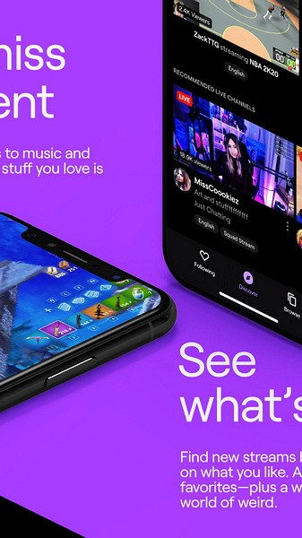
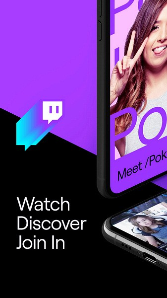

Twitch 掉宝教程：从零开始挂机领游戏奖励
Twitch 上的掉宝活动能让你挂着看直播就拿到游戏内道具和皮肤奖励。本文从零教你注册、绑定、找活动、确认生效、高效挂机到最后领奖的完整流程。
这篇教程能帮你做什么
跟着走一遍，你就能独立参与 Twitch 掉宝活动——不用买东西、不用玩游戏，挂着看直播就能拿到各种游戏的皮肤、道具、货币奖励。整个流程大概花你十分钟配置，剩下就是挂机等。
准备工作
平台：Twitch 网页端或手机 App 都行，但网页端操作更方便。手机版从官方下载拿就行。前置条件：
- 一个有效的 Twitch 账号（邮箱注册即可，免费）
- 你想参与掉宝的那款游戏的官方账号（比如 Riot 账号、Steam 账号，不同游戏要求不一样）
- 稳定的网络（看直播嘛，至少 480p 能流畅跑）
没了，就这些。下面开始走流程。
第一步：注册并登录 Twitch
打开 Twitch 官网，右上角点「注册」，填用户名、密码、邮箱，过个验证码就能用。手机号也能注册，但大部分掉宝活动邮箱账号就够。
登录后进首页就是发现流（Discover Feed），各种游戏分类、热门主播、推荐频道都在这刷。没事可以先逛逛熟悉下界面风格，Twitch 的直播文化和国内平台不太一样，弹幕区聊的内容、主播的节奏都有自己的一套。

第二步：绑定游戏账号
这一步是掉宝的命门——不绑定的话，你看多久直播都拿不到奖励，白挂。
操作步骤：
- 登录后点右上角头像 → 下拉菜单里找「设置」（Settings）
- 左侧菜单往下滚，找到「连接」（Connections）这一栏
- 页面往下拉，到「其他连接」（Other Connections）区域——这里列出了所有支持 Twitch 掉宝的游戏厂商
- 找到你想参与的那款游戏，点右边的「连接」按钮
- 会跳到游戏厂商那边的授权页面，登录你的游戏账号、确认授权
- 授权成功，回到 Twitch 这边看连接状态变成绿色的「已连接」就稳了
一个小提醒：有些掉宝活动会要求你在活动页面单独再绑定一次，别嫌麻烦，多绑一次也没坏处，漏绑才是真的亏。
第三步：找到正在进行的掉宝活动
Twitch 专门做了一个掉宝活动聚合页：
- 网页端：头像下拉菜单里直接有「Drops & Rewards」入口
- 手机 App：侧边栏或设置里找 Drops / 掉宝入口
进去之后页面按活动状态分三块：
| 分区 | 说明 |
|---|---|
| 进行中 | 可以马上参与的活动，抓紧时间 |
| 即将开始 | 还没开始，能提前关注预约 |
| 已过期 | 结束了，别浪费时间 |
点一个「进行中」的活动，Twitch 会自动把你带到当前正在直播该游戏且开启了掉宝的频道——省得你自己找来找去。这步很重要，后面会说为什么。

第四步：确认掉宝在生效
进频道之后别急着挂，先看两个东西确认掉宝真的在跑，不然挂了也白挂。
第一看：频道有没有开掉宝标识
开了掉宝的频道，直播画面的左上角或右上角会有明显的「Drops Active」角标。没这个标识的频道，哪怕主播播的是同款游戏，看了也不计入掉宝时长。很多新手翻车就翻在这——随便点个频道挂了两小时，最后发现频道根本没开掉宝。
第二看：进度条有没有在涨
这是最保险的确认方式。回到 Twitch 的掉宝活动页面，找到你正在参与的那个活动，看页面上的进度条是不是在动。进度条在涨 = 掉宝在正常计时。
如果进度条卡着不动，排查这几件事：
- 频道真的开了掉宝吗？换个带 Drops Active 标识的试试
- 游戏账号绑定成功了吗？回设置里的 Connections 重新确认
- 活动是不是还没到开始时间？Twitch 活动写的一般是太平洋时间，注意和北京时间的时差
掉宝活动的具体规则（后台算不算有效、绑定失效怎么重新连）每个厂商都有差异，拿不准的翻twitchtv文档，常见坑基本都列了。
第五步：高效挂机刷时长
确认掉宝生效了，就可以挂着了。但挂也有讲究，别浪费带宽也别让活动白跑。
手机端挂机
- 打开频道页面放着就行，锁屏一般没问题，但还是建议偶尔回来看一眼进度条
- 一定要插电，长时间直播手机耗电很快，中途没电关机就前功尽弃了
网页端挂机（推荐）
- 浏览器打开频道页，切到其他标签页（不要关闭）
- Twitch 在后台标签会自动降画质省带宽，但掉宝计时不受影响
- 想同时刷多个游戏的掉宝？多开几个标签页就行——每个 720p 流约 3~4 Mbps，带宽够的话同时挂 4 个没问题
关于完全后台 / 锁屏
Twitch 官方没完全说死哪些活动允许后台。但经验上：活动规则明写了允许后台的才能放心挂；没写的，建议别锁屏，网页端开着就行。赌规则输了亏的是你自己的时长，犯不上。
第六步：领取奖励
观看时长达标后，回掉宝活动页面，那个活动旁边会出现「领取」按钮，点一下就完成。奖励一般在几分钟内发到你的游戏账号里。
重点提醒：很多掉宝活动有「领取窗口」——活动结束后 X 天内必须手动点领取，过期就作废了。所以活动结束别急着关，先回掉宝页面扫一眼有没有待领的，不然挂了几小时的成果打了水漂。
三个新手最容易踩的坑
坑一：挂了才发现频道没开掉宝
这是最常见的翻车。解决办法很简单——别从游戏分类页直接进频道，从掉宝活动页面点进去。Twitch 会自动把你导航到正确的频道，不会错。
坑二：进度条一直不动
别慌，按这个顺序排查：频道有没有 Drops Active 标识 → 游戏账号是不是在 Connections 里真的连上了 → 活动开始时间是不是对得上（太平洋时间和北京时间差 16 小时左右）。八成是这三件事里的一件没搞定。
坑三：活动结束忘了领
这个真没处说理去，厂商活动一般不给补发。建议手机设个提醒，或者养成习惯：挂完频道先回掉宝页面扫一眼再关。
额外说两句
掉宝只是 Twitch 直播生态的一个边角，但通过掉宝进 Twitch 之后你会发现，这个平台的聊天文化、直播氛围和国内完全不一样。聊天区里大家敲的 Kappa、PogChamp、LUL 这些不是文字是表情——输入 Kappa 会自动变成一张经典笑脸图发出去，算是老观众之间的一种暗号。如果挂着掉宝的时候无聊，可以去聊天室里逛逛，感受下这种和弹幕不同的互动方式。
好了，这六步走完，下次看到你感兴趣的游戏做掉宝活动，直接开冲就行。
资料来源参考
这篇教程用到的资料我放在了三个地方，如果你想深挖或者以后回来看：维护得最全的在 GitHub，国内网络怕 GitHub 慢的话去 Gitee 或 GitCode 备份版，内容是一样的。